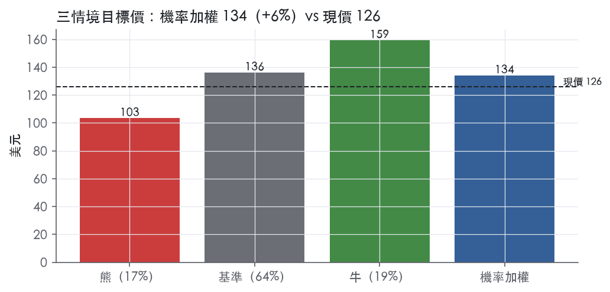
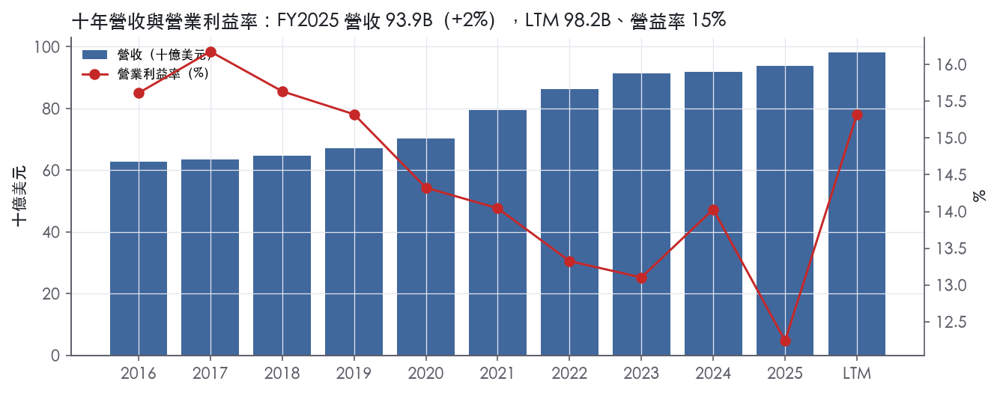
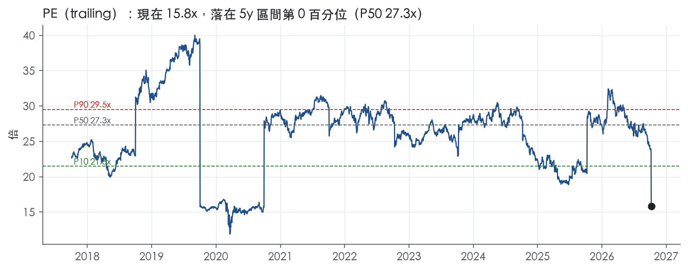
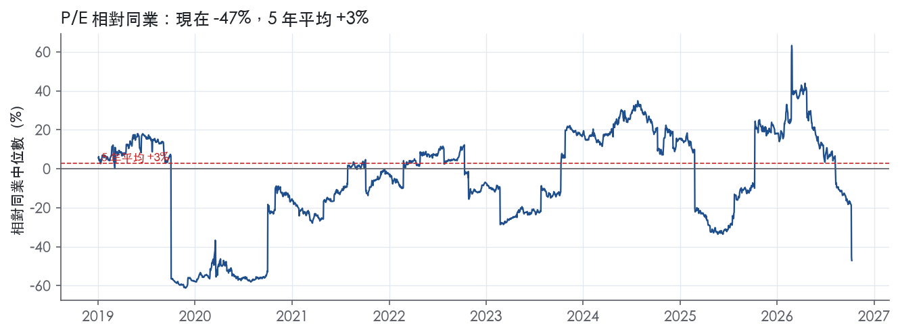
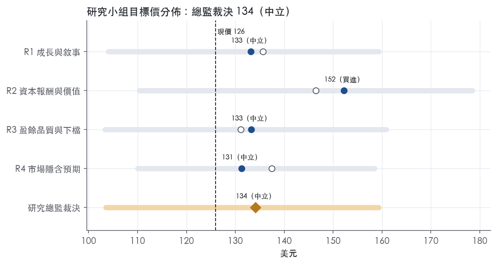
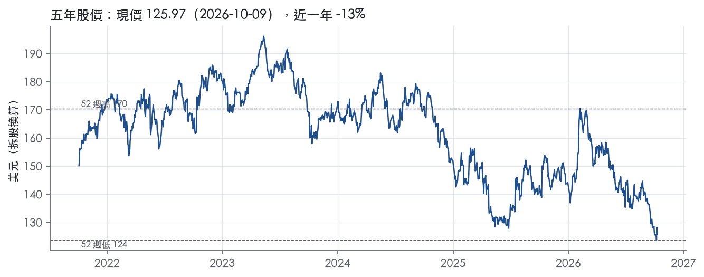

評等總表 › 必需消費 › PEP
中性：折價止跌不收斂，16.5x等降本金額｜評等 中立｜目標價 134
| 報告日 | 評等 | 目標價 | 當時股價 | 超額報酬 |
|---|---|---|---|---|
| 2026-10-09 | 中立 | 134 | 126 | +0.9% |
| 評等 | 中立 |
| 12 個月目標價 | 134 美元 |
| 現價 | 125.97 美元（2026-10-09） |
| 預期報酬 | 股價 +6.5%＋股息 4.6%＝總報酬 +11.1%；同業籃門檻 10.2%，超額 +0.9% |
| 估值方法 | P/E 16.5x，套在未來四季的EPS |
| 三情境 | 熊 103／基準 136／牛 159 |
| 研究流程 | 四位研究員兩輪辯論＋研究總監裁決 |
| 資料來源 | SEC EDGAR XBRL、Tiingo、FRED（全免費） |
中性：折價止跌不收斂，16.5x等降本金額（研究總監裁決，四位研究員兩輪辯論後）
評等 中立｜12 個月目標價 134 美元（總監三情境機率加權 135 與研究員中位數 133 各半）｜現價 125.97（2026-10-09）
預期報酬：股價 +6.5%＋股息 4.6%＝總報酬 +11.1%。同業籃門檻 10.2%，超額 +0.9%。
估值方法：P/E 16.5x，套在未來四季的EPS。三情境：熊 103（17%）／基準 136（64%）／牛 159（19%）。
什麼會讓研究總監改變看法：FY2027指引中點≥5%且降本金額量化、FY2026 FCF/營收≥11.9%則轉多並上調至18x；指引中點<2%或Q4核心營益率年減擴大則轉空至14.5x；俄羅斯現金遭管制則直接調高熊機率。
| 過去四季（實際，FY2026Q3） | 未來四季 | 第 5–8 季 | 第 9–12 季 | |
|---|---|---|---|---|
| 營收（B） | 98.2B | 102.2B | 105.7B | 109.4B |
| 營收成長 | 17.5% | 4.0% | 3.5% | 3.5% |
| 營業利益率 | 15.3% | 15.0% | 15.0% | 15.0% |
| EPS（美元） | 7.96 | 8.26 | 8.61 | 8.98 |
| EPS 成長 | 13.8% | 3.8% | 4.3% | 4.3% |
| 每股股息（美元） | 5.80 | 5.80 | 5.80 | 5.80 |
| P/E（現價） | 15.8x | 15.3x | 14.6x | 14.0x |
| 股息殖利率（現價） | 4.6% | 4.6% | 4.6% | 4.6% |
過去四季為申報數字；預測為研究總監的假設、程式計算。倍數與殖利率都用現價計算，用來看現價對應各期獲利的高低。
| 情境 | 機率（歷史） | 故事 | 未來四季營收成長 | 第 5–8 季營益率 | 倍數 | 目標價 | 股價漲跌 |
|---|---|---|---|---|---|---|---|
| 熊 | 17%（14%） | 北美利潤率續降、關稅與商品成本無法轉嫁、2027年2月FY2027指引二次落空，折價擴大到低於所有同業（風險表第1、2、3條；第4條俄羅斯為熊以外深尾） | 2.0% | 13.8% | 14.0x | 103 | -17.9% |
| 基準 | 64%（65%） | 有機約3%、國際撐成長、北美持平，降本與通膨及再投資打平，GAAP營益率15%，個股折價停止擴大、小幅修復 | 4.0% | 15.0% | 16.5x | 136 | 8.2% |
| 牛 | 19%（20%） | PFNA淨定價轉正、國際維持高個位數有機成長、降本金額量化且超過再投資，核心營益率自y2擴張，倍數脫離十年地板向3y P10方向收斂 | 5.5% | 16.0% | 19.0x | 159 | 26.5% |
目標價由程式依研究總監的驅動與倍數計算；機率由研究總監給定。括號內是歷史頻率：把這檔股票過去十年 12 個月報酬的波動形狀，置中在基準情境，結果落在各情境附近的比例。

四位研究員用不同方法各自估值，回應研究總監的質疑後交出第二輪，最後由總監逐點裁決。各研究員的主張見第七章，裁決理由見第八章，完整論證見《研究底稿》。
| 立場（一輪→二輪） | 加權目標價（一輪→二輪） | 評等（一輪→二輪） | 第二輪倍數 | 熊～牛目標價 | |
|---|---|---|---|---|---|
| R1 成長與敘事 | 中性→中性 | 136→133 | 中立→中立 | 16.5x | 104～159 |
| R2 資本報酬與價值 | 看多→看多 | 146→152 | 加碼→買進 | 18.0x | 110～178 |
| R3 盈餘品質與下檔 | 中性→中性 | 131→133 | 中立→中立 | 16.2x | 103～161 |
| R4 市場隱含預期 | 看多→中性 | 137→131 | 中立→中立 | 16.2x | 110～159 |
| 研究總監裁決 | 中性 | 134 | 中立 | 16.5x | 103～159 |
目標價由程式依各自的驅動與倍數計算；評等＝機率加權總報酬 − 同業籃門檻。
PepsiCo 是一家全球性的飲料與方便食品公司，品牌組合包括 Lay's、Doritos、Cheetos、Gatorade、Pepsi-Cola、Mountain Dew、Quaker 與 SodaStream¹。公司透過自身營運、授權裝瓶商、委外製造商及其他第三方製造、行銷、配送並銷售多元的飲料與方便食品，服務超過 200 個國家與地區的客戶與消費者¹。LTM 營收 98.24B，是全球食品飲料業規模最大的公司之一。公司本質是一家靠規模、通路與品牌組合驅動現金流的消費品公司，北美是利潤與現金流的基本盤，國際市場則是目前的成長引擎。
PepsiCo 依地理與品類劃分六大報告分部：PepsiCo Foods North America（PFNA）、PepsiCo Beverages North America（PBNA）、International Beverages Franchise（IB Franchise）、Europe, Middle East and Africa（EMEA）、Latin America Foods（LatAm Foods）與 Asia Pacific Foods²。各分部營收占比與絕對金額在提供的 10-K 段落中未揭露。從最新一季（FY2026Q3）的營收成長率看，分部間呈現明顯的「北美停滯、國際加速」格局：PFNA 持平、PBNA 成長 5%、IB Franchise 成長 8%、EMEA 成長 8%、LatAm Foods 成長 14%、Asia Pacific Foods 成長 10%²。產品面，公司持續改造核心品牌組合，降低 Lay's、Gatorade 等品牌的添加糖、鈉與飽和脂肪，並在 Lay's、Cheetos、Doritos 上去除人工色素與香料，同時推出具功能性的新品如 Pepsi Prebiotic Cola，並新納入 Siete、Sabra、poppi 等品牌¹。整體而言，便利食品（PFNA 為主）與全球飲料（PBNA、IB Franchise 為主）是兩大品類引擎，前者靠零食通路與創新驅動，後者靠併購（2025 年多筆飲料收購）與品類擴張驅動。
PepsiCo 在超過 200 個國家與地區銷售產品，是一家真正全球化、但同時強調「本地連結」的公司¹。地區集中度風險值得留意：俄羅斯業務占 FY2025、FY2024 合併淨營收各為 5% 與 4%，占合併資產 5%／3%，占合併現金及約當現金 20%／10%，占累積換算損失 39%／41%¹。通路上，公司正面對零售通路結構性轉變，包括電商與行動商務銷售持續成長、線上線下整合、硬折扣店國際擴張，以及客戶逐漸脫離 DSD（直送）體系¹。零售商與採購聯盟正在壓縮公司的貨架空間並擴大自有品牌，對公司在特定市場的成長能力造成壓力¹。同時公司也在擴大非居家消費（away-from-home）場景，例如在體育場館推出 Walking Taco 平台、搭配「Food Deserves Pepsi」行銷活動¹。整體看，公司的通路結構正從傳統 DSD／零售主導，逐步往電商、非居家與直接消費者（D2C）通路分散，這是應對零售商議價力上升的必要調整。
FY2025Q4（期末 2025-12-27）營收 29.34B、年增 5.6%，營益率 12.1%。FY2026Q1（期末 2026-03-21）營收 19.44B、年增 8.5%，營益率回升至 16.5%。FY2026Q2（期末 2026-06-13）營收 24.18B、年增 6.4%³，組織性營收成長 2.4%，核心 EPS 年增 4%，核心 EPS 不變匯率成長 1%³；當季管理層指出北美便利食品靠創新與平價策略取得銷量份額，但淨定價下滑使營收下降，國際四個分部均呈強勁成長³。FY2026Q3（期末 2026-09-05）營收 25.27B、年增 5.6%，組織性營收成長加速至 3.1%，營業利潤成長 19%、營益率擴張 195 個基點至 16.9%，EPS 年增 17%、核心 EPS 年增 2%²；公司並更新 FY2026 財測，將全年組織性營收成長目標收斂至約 3%（原區間 2%–4%），淨營收成長目標上調至約 6%，但核心 EPS 成長目標由原先「5%–7% 低端」下修至 2.5%–3.5%²。CEO Laguarta 在 Q3 新聞稿中表示：「我們將持續聚焦強化國際業務，同時積極改善北美表現……正在識別額外的結構性降本行動，將於未來數月實施，以資助投資並緩解投入成本通膨的衝擊」²。
公司在 10-K 中明確列出三大優先順序：重振北美業務（整合可整併的營運、將節省資金投入品牌）、擴大國際業務的規模與市占（聚焦大型與發展中市場的成長機會）、以及透過擴大供貨與拓展新場景來成長「非居家消費」業務¹。公司以 pep+（PepsiCo Positive）轉型計畫作為策略主軸，目前已進入第五年，核心是透過品牌投資、技術與 AI、製造與物流網路現代化，以及更靈活的營運模式，提升生產力與韌性¹。在組織層面，公司自 2025 年初調整營運模式，推動「One PepsiCo」——共享全球服務、簡化流程、並在北美評估整合食品與飲料供應鏈、市場進入與商業能力的一體化模型¹。技術上，公司透過與科技供應商合作運用 AI 重塑市場進入模式、強化客戶支援、賦能銷售團隊聚焦策略性成長，並藉此統一數據、提升即時庫存可視性¹。最新一季新聞稿進一步強調將「透過更多創新投資、有效品牌建設、按通路精準執行市場策略」改善北美表現，並識別額外結構性降本行動以資助投資、緩解投入成本通膨²。
就我們的判斷，國際四分部（IB Franchise、EMEA、LatAm Foods、Asia Pacific Foods）目前是營收與利潤成長的主要動能，而北美兩大分部（PFNA、PBNA）成長停滯甚至承壓，管理層已明確將資源與敘事重心轉向國際，同時承認北美需要結構性改革。核心 EPS 成長指引在一個季度內由「5%–7% 低端」大幅下修至 2.5%–3.5%，反映關稅與投入成本通膨的衝擊超出年初預期，是基本面轉弱的訊號而非單純匯率干擾。北美供應鏈與市場進入模式的整合（One PepsiCo）能否落地降本，將是未來評估公司能否重新加速北美成長的關鍵觀察點。

PepsiCo 的護城河評為「寬」：它來自零食與飲料兩條品類的品牌組合，加上全球規模的製造與配銷網路，而且十年數據裡毛利率與超額報酬都沒有中斷過。趨勢判為「變窄」：ROIC 與營業利益率在 FY2025 同時跌到十年最低，零售端也正在結構性削弱公司的通路優勢。我們有把握在未來十年以上 ROIC 仍高於資本成本，但超額報酬的幅度大概率比過去十年平均更薄。
無形資產（品牌）是主要來源。公司的品牌組合包括 Lay's、Doritos、Cheetos、Gatorade、Pepsi-Cola、Mountain Dew、Quaker 與 SodaStream，服務超過 200 個國家與地區的客戶與消費者¹。這些品牌在各自品類都是消費者的預設選項，讓公司可以把成本上漲轉嫁出去，毛利率十年穩定就是證據（見下節）。公司持續用收購補強品牌組合，新納入 Siete、Sabra 與 poppi 等品牌¹。品牌資產是靠持續再投資維持的，管理層的優先事項之一是把北美整併省下的錢投回品牌¹。
成本優勢（規模與配銷）是第二來源。公司透過自身營運、授權裝瓶商、委外製造商及其他第三方製造、行銷、配送並銷售產品¹。管理層明確把「善用我們在各市場的規模與能力」列為應對挑戰的手段¹。公司也正在擴建與更新製造據點，並調整、現代化倉儲與配銷產能¹。零食與飲料共用全球採購與通路的密度，讓單位配送成本低於區域型競爭者，這是自有品牌與新進品牌短期內難以複製的。
轉換成本、網路效應與效率規模的類別，在原文中找不到證據，所以不列。
數字支持「寬」的評級，但同時顯示護城河正在變窄，兩者並存。
支持的一面：ROIC 有資料的 9 年中，9 年都高於資本成本代理值 10.2%，十年平均 ROIC 18.0%，平均超額報酬 7.8%。毛利率十年平均 54.4%、標準差只有 0.7%，最低 53.0%、最高 55.1%。FY2021–FY2022 投入成本通膨期間，毛利率只從 54.8%（FY2020）降到 53.0%（FY2022），FY2023 就回到 54.2%（年度表 FY2020、FY2022、FY2023 毛利率）。這種毛利率韌性是品牌定價權最直接的量化證據，也是我們維持「寬」評級的主要依據。
衝突的一面：最新 ROIC 14.7% 是十年最低，營業利益率 12.2% 也是十年最低。FY2025 ROIC 從 FY2024 的 17.4% 降到 14.7%（年度表 FY2024、FY2025 ROIC）。十年最高的 ROIC 25.9% 出現在 FY2018，當年淨利 12.52B（年度表 FY2018 淨利），明顯高於前後年度，我們判斷這是一次性項目墊高的數字，不代表常態，所以十年平均 18.0% 本身就有高估。毛利率穩定、營業利益率卻下滑，代表侵蝕發生在營業費用與再投資端，不在定價端，品牌定價權大致完好，但守住它的成本在上升。ROE 十年平均 54.8%、標準差 15.6%，淨負債從 FY2016 的 27.71B 增加到 FY2025 的 46.51B（年度表淨負債），ROE 的高水準大量來自財務槓桿，不能拿來佐證護城河。
我們仍維持「寬」：最新 ROIC 14.7% 即使是十年低點，仍高於 10.2% 的資本成本代理值。FY2026 前三季營業利益率分別為 16.5%、16.6%、16.9%，顯示 FY2025 的低點有部分屬於階段性壓力。但趨勢必須標「變窄」，因為 ROIC 的長期軌跡往下，而且下面列的侵蝕因素是結構性的。
最大的侵蝕來自零售通路的議價力轉移。零售商與採購聯盟正在改變傳統價值主張、下架公司產品或縮減分配給公司產品的貨架空間，並專注推出與發展自有品牌¹。硬折扣商正在國際擴張，電商與行動商務的銷售持續成長¹。客戶正在脫離 DSD（直送）體系¹。DSD 是公司成本優勢與貨架控制力的核心，客戶脫離 DSD 會直接削弱第二項護城河來源。
第二項是定價轉嫁能力的邊界。價格上漲時，公司不一定能把增加的成本轉嫁給客戶，這可能導致銷量、營收、利潤率與營運成果下降¹。關稅已經影響公司供應鏈，推高部分原物料與包材的投入成本¹。
第三項是針對產品成分的稅與法規。部分司法管轄區已經開徵或正在考慮開徵新的或更高的稅，課徵對象是含糖、鈉或飽和脂肪等成分的零食產品¹。這類政策會直接衝擊核心品牌的需求，迫使公司持續投入配方調整，也就是降低 Lay's 與 Gatorade 等核心品牌的添加糖、鈉與飽和脂肪¹。
目標倍數相對必需消費品同業可以給溢價，理由是毛利率十年標準差只有 0.7%、ROIC 9 年都高於資本成本，品牌定價權有數字支撐。但溢價幅度應低於歷史，不宜以 5 年中位數 P/E 27.3x作為回歸目標，因為 ROIC 與營業利益率都處於十年低點，通路侵蝕又是結構性的，超額報酬的幅度正在收斂。建議估值研究員用「寬但變窄」的設定處理，給較長的超額報酬期，但讓超額報酬幅度逐年遞減，不要用十年平均 ROIC 18.0% 外推。
| 指標 | 最新 | 十年平均 | 標準差 | 最低 | 最高 |
|---|---|---|---|---|---|
| ROIC | 14.7% | 18.0% | 3.0% | 14.7% | 25.9% |
| 毛利率 | 54.1% | 54.4% | 0.7% | 53.0% | 55.1% |
| 營業利益率 | 12.2% | 14.4% | 1.2% | 12.2% | 16.2% |
| FCF 利潤率 | 8.2% | 9.0% | 1.5% | 6.5% | 12.1% |
| ROE | 42.9% | 54.8% | 15.6% | 42.9% | 97.9% |
程式計算。資本成本代理值（10 年債＋5%）：10.2%；ROIC 平均減資本成本：7.8%；ROIC 有資料的 9 年中，高於資本成本 9 年。
營業現金流／淨利 LTM 1.34x、近三年 1.42x、十年平均 1.43x，三個時間窗都在綠燈區，盈餘有現金支撐。自由現金流／淨利 LTM 0.96x、近三年 0.85x、十年平均 0.89x，同樣全綠，扣掉資本支出後盈餘幾乎全部轉成現金。應計比率 LTM -3.4%、近三年 -3.7%、十年平均 -3.0%，長年為負值，代表淨利裡靠應計（而非現金）撐出來的部分不增反減，是正面訊號。唯一要盯的是存貨成長－營收成長 FY2025 為 +7.9pp，落在黃燈區，代表存貨堆積速度快過營收，若延續會開始吃掉未來現金轉換。LTM FCF 10.47B，對照 LTM 稀釋 EPS 7.96換算的淨利規模，現金面沒有脫鉤，這點支撐「中高」而非「低」的品質判斷。
Q3 2026 GAAP 營業利益 4,260M、年增 19%，但核心營業利益僅 4,277M、年增 3%，核心營業利益率反而收縮 35 個基點²。差距主因是「acquisition and divestiture-related charges/credits 的有利淨影響」與「商品衍生品按市值計價的淨收益」²——這兩項都是非現金或非經常性，不應視為真實經營改善。年初至今（YTD）落差更誇張：GAAP 營業利益年增 45%，核心僅 5%，GAAP 端的暴衝主要來自「去年同期 Rockstar 與 Be & Cheery 品牌的減損費用」造成的基期效應，以及併購／處分相關費用的有利淨影響²。EPS 層面同樣分裂：Q3 GAAP EPS 2.23、年增 17%；核心 EPS 2.34、年增僅 2%；YTD GAAP EPS 6.10、年增 47%，核心 EPS 6.15、年增僅 5%²。另外核心營業利益成長裡還含「4 個百分點來自關稅退款的有利影響」，這是政策性、不確定能否持續的項目²。我認為真實成本只有核心口徑裡的生產力節省與淨定價效益是可持續的，減損基期效應、M&A 相關費用淨額、商品 MTM 損益、關稅退款都是雜訊，應該從盈餘品質裡剔除。SBC／營收長年維持在 0.3%–0.4%，佔比極低，不是稀釋盈餘的重要因子。
淨負債／EBITDA LTM 2.18x、近三年平均 2.82x、十年平均 2.56x，燈號為黃，三年均值比十年均值高，顯示近年舉債速度快於過去。對照年度表，淨負債從 FY2023 的 40.61B、FY2024 的 42.12B 升到 FY2025 的 46.51B，升幅與 2024 年收購 Sabra（PFNA 整併入股權）的時間點吻合¹。但利息保障倍數 LTM 13.6x、近三年 13.0x、十年平均 10.2x 全部是綠燈，付息能力沒有被槓桿侵蝕。稀釋股數年變動 LTM -0.4%、近三年 -0.3%、十年平均 -0.6%，長期靠回購淨減少股數，沒有稀釋問題。（股利＋回購）／淨利 LTM 81.4%、近三年 91.8%、十年平均 96.1%，全部低於 100%，代表股東回饋沒有靠舉債撐場，是用當期盈餘支付。guidance 裡公司自己也明確規劃 2026 年股利 7.9B＋回購 1.0B，合計 8.9B 的現金回饋股東（Cash Returns to Shareholders）²，資本配置節奏保持一致。
紅旗一：淨負債／EBITDA 黃燈（三年均值 2.82x 高於十年均值 2.56x）——真問題但程度可控：槓桿確實因近年收購（如 Sabra）而上升，但利息保障倍數仍在 13x 以上的綠燈區，償債能力未受影響，屬於「可解釋、未失控」的槓桿上行，不足以單獨拉低盈餘品質評級到「低」。
紅旗二：存貨成長－營收成長 FY2025 +7.9pp 黃燈——程式標出但 MD&A 節錄未提供 FY2025 存貨細節，無法直接對應原文證據。考量公司在風險因子章節反覆提及原物料、包材、運輸成本在 2025 年持續波動，可能延續到 2026 年¹，存貨堆積有可能是備貨應對成本波動或關稅的策略性動作，但也可能是需求不如預期的早期訊號，我將其列為「待觀察、非已證實的一次性項目」。
紅旗三（程式標出）：淨利率 FY2017→FY2018 跳動 +12 個百分點——這是十年曆史資料裡的舊紅旗，發生在淨利從 4.86B（FY2017）跳到 12.52B（FY2018）、EPS 由 3.38 跳到 8.78（年度表）。本次提供的 10-K（FY2025）MD&A 節錄未涵蓋 2017–2018 年度的細節說明，我無法從本次拿到的原文找到直接證據，但依產業常識判斷，2017 年美國稅改（Tax Cuts and Jobs Act）導致當年記入大額一次性遞延稅負重估費用、壓低 2017 淨利，2018 年基期效應反轉推高淨利，屬於稅務會計上的一次性項目，而非營運品質真實惡化或改善。由於這段落差發生在 LTM 之前八年、不影響目前的現金轉換與應計比率判斷，建議估值研究員忽略這段歷史跳動，不對目前盈餘品質打折。
估值應該以核心（non-GAAP）營業利益與核心 EPS 為基礎，因為最近兩期 GAAP 盈餘成長（Q3 +19%、YTD +45%）主要被減損基期效應、併購處分淨影響、商品 MTM 損益與關稅退款墊高，核心成長只有個位數（Q3 +3%、YTD +5%）²。現金轉換與應計比率長年優異，不需要對「現金品質」打折，但槓桿處於黃燈、且近三年舉債速度快於過去，若用 EV/EBITDA 做估值，應對照淨負債上升的趨勢保守看待倍數擴張空間，不宜給予高於歷史中位數的乘數。存貨紅旗屬觀察項，暫不需立即打折，但若下一季財報存貨／營收缺口未收斂，應在下次更新中重新評估是否轉為真問題。
| 項目 | LTM | 近三年 | 十年 | 燈號 | 規則 |
|---|---|---|---|---|---|
| 營業現金流／淨利 | 1.34x | 1.42x | 1.43x | 綠 | ≥1.00x 綠、<0.80x 紅 |
| 自由現金流／淨利 | 0.96x | 0.85x | 0.89x | 綠 | ≥0.90x 綠、<0.60x 紅 |
| 應計比率（(淨利−CFO)／平均總資產） | -3.4% | -3.7% | -3.0% | 綠 | ≤0.0% 綠、>5.0% 紅 |
| SBC／營收 | 0.3% | 0.4% | 0.4% | 綠 | ≤3.0% 綠、>8.0% 紅 |
| 淨負債／EBITDA | 2.18x | 2.82x | 2.56x | 黃 | ≤1.50x 綠、>3.00x 紅 |
| 利息保障倍數（營業利益／利息） | 13.6x | 13.0x | 10.2x | 綠 | ≥8.00x 綠、<3.00x 紅 |
| 稀釋股數年變動 | -0.4% | -0.3% | -0.6% | 綠 | ≤0.0% 綠、>3.0% 紅 |
| （股利＋回購）／淨利 | 81.4% | 91.8% | 96.1% | 綠 | ≥50.0% 綠、<0.0% 紅 |
| 存貨成長 − 營收成長（FY2025） | +7.9pp | — | — | 黃 | ≤5pp 綠、>15pp 紅 |
程式計算；燈號以 LTM（無則近三年平均）判定。
| 風險 | 觸發指標（看什麼數字、在哪裡看） | 對 EPS 的影響方向與粗略幅度 | 未來 12 個月發生機率（高／中／低） | 出處 |
|---|---|---|---|---|
| 北美業務（PFNA/PBNA）利潤率持續惡化 | PFNA/PBNA 單季營益率與年增率、季度財報 Segment Review 表 | 負向；大。PBNA FY2025 營益率衰退 53%（主因 Rockstar 減損），PFNA FY2025 衰退 7%² | 高 | 8-K 財報新聞稿（2026-10-08） |
| 關稅與商品成本通膨侵蝕毛利 | 季度財報中「商品成本對營益率的 percentage-point impact」、「關稅對商品成本的 percentage-point impact」 | 負向；中大。PBNA FY2025 商品成本造成營益率 5 個百分點衝擊，其中關稅貢獻 6 個百分點⁴ | 高 | 10-K 年報 FY2025 Item 7（管理層討論與分析） |
| 核心 EPS 成長指引下修，顯示管理層對全年展望信心轉弱 | 每季財測更新中的「Core EPS 成長目標區間」變化 | 負向；中。FY2026 核心 EPS 成長目標由「5%–7% 低端」下修至 2.5%–3.5%² | 中 | 8-K 財報新聞稿（2026-10-08） |
| 俄羅斯業務的現金與資產集中度風險（制裁、資金移轉限制、匯損） | 俄羅斯占合併營收、現金及約當現金、累積換算損失之比例（10-K Item 1A 揭露） | 負向；中。俄羅斯占 FY2025 合併營收 5%、合併現金及約當現金 20%、累積換算損失 39%⁵ | 中 | 10-K 年報 FY2025 Item 1A（風險因素） |
| 零售通路結構轉變（電商、硬折扣店、客戶脫離 DSD、私有品牌擴張）壓縮貨架空間與議價力 | 零售商合約更新、私有品牌市占數據、公司 D2C／電商營收占比揭露（目前未單獨揭露） | 負向；中小，難以量化具體幅度 | 中 | 10-K 年報 FY2025 Item 7（管理層討論與分析） |
北美業務利潤率持續惡化是目前最大的盈餘風險。PBNA 在 FY2025 因 Rockstar 品牌減損、營運成本上升、poppi 併購相關費用及商品成本（含關稅衝擊 5 個百分點）影響，營益率較前一年衰退 53%⁴。PFNA 同期因策略性投入、重整費用上升及有機銷量下滑，營益率衰退 7%⁴。進入 FY2026Q3，PFNA 營益率年變化仍為負 13%（GAAP）、核心固定匯率基礎負 12%²，顯示北美便利食品業務的結構性壓力尚未逆轉。管理層自己承認需要「以緊迫感改善北美表現」，並計畫在未來數月實施額外結構性降本行動²，這本身即是對當前北美盈利能力不佳的間接確認。
關稅與商品成本通膨是驅動北美利潤率惡化的具體機制之一。公司在 Item 1A 明確表示，美國對中國、歐盟、加拿大、墨西哥等國徵收或威脅徵收的關稅已影響並可能持續影響其供應鏈，提高原材料與包裝成本⁵。FY2025 PBNA 商品成本對營益率造成 5 個百分點衝擊，其中關稅貢獻 6 個百分點（換算後商品成本本身實為淨正貢獻的抵銷項，數字照原文列示）⁴。EMEA 同期則受乳製品、馬鈴薯與食用油成本上升衝擊營益率 22 個百分點⁴。這類成本波動具高度不可預測性，且公司明確表示「價格上漲時我們可能選擇不轉嫁給客戶，這可能導致銷量、營收、利潤率與營運結果下降」⁵。值得注意的是 FY2026Q3 核心營益率反而受益於「關稅退款帶來 4 個百分點的有利影響」²，顯示此風險項目波動性大、方向可能逆轉，須逐季追蹤。
核心 EPS 成長指引下修是市場最直接會反應在倍數上的訊號。公司在 FY2026Q3 新聞稿中更新全年財測，核心 EPS 成長目標由原先「5%–7% 區間低端」下修至 2.5%–3.5%²，同時組織性營收成長目標收斂至約 3%²。這代表管理層對下半年利潤率修復的信心不如年初，且下修發生在公司同時宣布「額外結構性降本行動」之後，顯示管理層正在用降本去填補原生成長與利潤率的缺口，而非營收加速帶動的自然改善。
俄羅斯業務集中度風險屬於地緣政治與資產負債表結構風險。俄羅斯占 FY2025 合併淨營收 5%、合併資產 5%、合併現金及約當現金高達 20%、累積貨幣換算損失 39%⁵。公司在 10-K 中承認存在「債務與信用問題、貨幣管制或波動、制裁與出口管制」等風險，且這些風險已經並可能繼續影響其在該市場的營運⁵。現金集中度特別值得注意：若制裁升級導致資金無法移轉回集團，將直接影響公司可動用的流動性，儘管公司表示「迄今尚未識別出對流動性或資本資源的重大影響」⁴，但這是一個可能隨地緣政治事件瞬間惡化的尾部風險。
零售通路結構轉變是中期、慢變量的風險。公司在 Item 1 Business Risks 中明確指出零售商與採購聯盟正在移除或減少公司產品的貨架空間，並聚焦發展自有品牌，這已經並可能持續影響公司在特定司法管轄區的成長能力⁴。同時客戶正逐漸脫離 DSD（直送）體系，轉向電商與線上線下整合通路⁴。這類風險難以用單一財報數字精準量化，但會持續體現在各分部的有機銷量數字上（例如 FY2025 PBNA 非碳酸飲料銷量下滑 6%、PFNA 鹹味零食銷量下滑 3%）⁴。
管理層變動集中在關鍵財務與營運職位，交接風險值得留意。CFO Stephen T. Schmitt 於 2025 年 11 月才上任，直接由零售業（Walmart U.S.）轉任，此前並無消費品製造業 CFO 經驗¹；North America CEO Ram Krishnan 亦於 2025 年 12 月才上任¹。在公司同時推動「One PepsiCo」營運模式整合、北美結構性降本、以及財測下修的敏感時期，核心財務與北美營運兩個關鍵職位均為新任者，執行風險上升。
核心 EPS 與 GAAP EPS 的缺口持續擴大，需留意「核心化」調整項目的品質。FY2026Q3 GAAP EPS 年增 17%，但核心 EPS 僅年增 2%，兩者差距主要來自收購處置相關費用與公允價值調整的「有利影響」被排除在核心數字之外²；FY2025 全年核心 EPS 與 GAAP EPS 差距達 2.14 美元（8.14 對 6.00）⁴。若非經常性項目持續年復一年出現（重整、減損、併購費用在過去兩年均存在），投資人應以核心數字的趨勢而非單一期的 GAAP 跳升來判斷盈餘品質。
現價 125.97 對應 trailing（過去四季）P/E 15.8x、EV/EBITDA 11.4x、EV/EBITA 14.1x、EV/Sales 2.2x、FCF 殖利率 6.1%。主要估值倍數 P/E 現在 15.8x，落在5 年區間第 0 百分位（P10／P50／P90 = 21.5x／27.3x／29.5x）。

把程式的機械基準預測放到現價下，市場付的前瞻倍數是：P/E（未來四季） 13.2x、P/E（第 5–8 季） 11.7x。反推 DCF 顯示市價隱含未來五年營收年成長 4.0%（WACC 9.0%、終值成長 3.0%、FCF 利潤率 11.9%，SBC 不加回）。
| 倍數 | 現在 | 5 年 P10 | 5 年 P50 | 5 年 P90 | 現在分位 | 全期 P50 |
|---|---|---|---|---|---|---|
| P/E | 15.8x | 21.5x | 27.3x | 29.5x | 0.0% | 27.1x |
| EV/EBITDA | 11.4x | 15.5x | 18.3x | 19.7x | 0.0% | 17.7x |
| EV/EBITA | 14.1x | 19.4x | 23.1x | 24.9x | 0.0% | 21.9x |
| EV/EBIT | 14.1x | 19.4x | 23.2x | 24.9x | 0.0% | 21.9x |
| EV/Sales | 2.2x | 2.5x | 3.0x | 3.6x | 0.0% | 3.1x |
| P/S | 1.8x | 2.1x | 2.6x | 3.1x | 0.0% | 2.7x |
| P/FCF | 16.4x | 29.1x | 33.9x | 39.3x | 0.0% | 32.2x |
trailing 倍數（股價 ÷ 過去四季）；分位以每個交易日計算。
同業籃：KO, KDP, STZ, PRMB, BF-B, WEST（SIC 2080 同業 27 家中，CY2025 營收最接近的 6 家）。評等門檻 10.2%：同業「倍數不變下持有一年」的隱含報酬中位數（＝ FCF 殖利率 ×(1＋g)＋g，g 為 5 年營收年複合成長並夾在 −2%～8%），每家夾在 0～15%、P/E 低於 5 倍視為資料可疑而排除，中位數再限制在 10 年債到 10 年債＋5% 之間（同業原始中位數 11.8%）；排除：STZ（隱含報酬算不出來）、WEST（隱含報酬算不出來）。
| 代號 | 市值 | 5 年營收 CAGR | 營益率 | ROIC | P/E | 5 年 P/E 中位數 | EV/EBITDA | P/FCF | 隱含報酬 |
|---|---|---|---|---|---|---|---|---|---|
| PEP | 172.2B | 5.9% | 15.3% | 14.7% | 15.8x | 27.3x | 11.4x | 16.4x | 12.4% |
| KO | 379.8B | 7.7% | 29.3% | 18.0% | 27.7x | 26.4x | 26.6x | 30.2x | 11.3% |
| KDP | 43.2B | 7.4% | 16.2% | 7.3% | 32.1x | 24.6x | 16.4x | 21.9x | 12.3% |
| STZ | — | 1.2% | 30.2% | 10.9% | — | — | — | — | — |
| PRMB | 7.0B | 14.5% | 7.2% | 3.6% | 72.6x | — | 10.7x | 19.0x | 13.7% |
| BF-B | 12.1B | 2.6% | 25.4% | 12.9% | 17.1x | 25.1x | 13.1x | 13.1x | 10.4% |
| WEST | 0.8B | 16.6% | -1.2% | -10.2% | — | — | 25.5x | — | — |
| 同業中位數 | 7.6% | 20.8% | 9.1% | 29.9x | 25.1x | 16.4x | 20.5x | 10.2% |
全部 trailing，程式以各公司 SEC XBRL 與 Tiingo 行情計算；第一列為本檔。
P/E 相對同業中位數：現在 -47.1%，過去 1 年平均 15.9%、3 年 9.4%、5 年 2.7%；EV/EBITDA 相對同業中位數：現在 -30.9%，過去 1 年平均 20.8%、3 年 1.4%、5 年 -9.1%。

程式的機械基準（成長率從過去四季年增率三年收斂到 6%、利潤率持平）用 P/E 5 年 P50（trailing），套在 NTM 估值得到 261（107.3%），市場現行前瞻倍數（現價 ÷ 基準 未來四季指標）一年後持平，套在基準 第 5–8 季指標得到 141。這兩個數字只是參考點，不是本報告的目標價；研究員對這個定價的回應在第七章。
下表是每位研究員第一輪（各自獨立）與第二輪（回應研究總監的質疑後）的結果。目標價全由程式依各自的假設計算。
| 立場（一輪→二輪） | 加權目標價（一輪→二輪） | 評等（一輪→二輪） | 第二輪倍數 | 熊～牛目標價 | |
|---|---|---|---|---|---|
| R1 成長與敘事 | 中性→中性 | 136→133 | 中立→中立 | 16.5x | 104～159 |
| R2 資本報酬與價值 | 看多→看多 | 146→152 | 加碼→買進 | 18.0x | 110～178 |
| R3 盈餘品質與下檔 | 中性→中性 | 131→133 | 中立→中立 | 16.2x | 103～161 |
| R4 市場隱含預期 | 看多→中性 | 137→131 | 中立→中立 | 16.2x | 110～159 |
| 研究總監裁決 | 中性 | 134 | 中立 | 16.5x | 103～159 |
目標價由程式依各自的驅動與倍數計算；評等＝機率加權總報酬 − 同業籃門檻。
分歧度：第一輪 加權目標價 131～146（區間＝現價的 12%）· 倍數 16.2～18x · 立場 中性×2、看多×2；第二輪 加權目標價 131～152（區間＝現價的 17%）· 倍數 16.2～18x · 立場 中性×3、看多×1。

| 研究員 | 第二輪主張 | 堅持的理由 |
|---|---|---|
| R1 成長與敘事 | 中立，給16.5倍P/E；有機成長約3%，倍數小幅修復。 | 降本金額尚未公布，這是倍數高於現行15.8倍的唯一理由。 |
| R2 資本報酬與價值 | 看多，給18.0倍P/E；十年底部的折價會部分回歸。 | 2025年費用壓低了歷史倍數的分母，今天的折價沒有表面那麼深。 |
| R3 盈餘品質與下檔 | 中立，給16.2倍P/E，等於過去十年市場付的下緣。 | 熊情境給14.0倍，低於所有同業；公司7月重申財測，10月就下修。 |
| R4 市場隱含預期 | 中立，給16.2倍P/E；市場對基本面的預期並不低。 | 市價隱含自由現金流利潤率11.9%，高於公司實際，市場偏樂觀。 |
每位研究員的逐條回應與完整論證見《研究底稿》（PEP_研究底稿_2026-10-12.docx）。
| 分歧點 | R1 | R2 | R3 | R4 | 什麼資料會分出勝負 |
|---|---|---|---|---|---|
| 1. 目標倍數：折價是否收斂 | 16.5x，略高於持平，靠未公布金額的降本 | 18.0x，ROIC>資本成本、歷史帶分母被壓低、貼 BF-B | 16.2x（10y P10），折價止跌不收斂 | 16.2x，市場對 FCF 轉換預期已偏寬鬆 | 2027-02 FY2027 指引：核心固定匯率 EPS 成長中點、降本年化金額；FY2026 FCF／營收對 11.9% |
| 2. 營益率路徑 y1／y2／y3 | 15.0／15.4／15.7 | 15.0／15.0／15.0 | 15.1／15.2／15.4 | 14.8／14.9／15.0 | FY2026 10-K 重組費用金額；FY2027Q1 核心營益率無退款下是否年增 |
| 3. 熊情境距離、倍數與機率 | −24%，14x，21%（歷史 15%） | −28%，15x，11%（歷史 10%） | −23%，14x，17%（歷史 16%） | −17%，14.5x，24%（歷史 25%） | 2027-02 是否二次下修；FY2026 GAAP 營益率是否跌破 14.5% |
| 4. 牛情境倍數 | 19.0x | 20.0x | 18.5x | 18.5x | PFNA 淨定價是否轉正；降本金額是否超過再投資 |
| 5. NTM 營收成長 | 4.0% | 4.5% | 4.0% | 4.5% | FY2027 指引的匯率與併購貢獻 |
分歧 1：目標倍數——選 R1 的 16.5x。 R2 的 18x 三條支撐都不足以主張「市場一年後付得比現在多」。「ROIC 14.7% 高於資本成本代理 10.2%」只證明護城河還在，而護城河章已判趨勢「變窄」並明言不以 27.3x 為回歸目標。「歷史帶分母被 FY2025 費用壓低」（GAAP 6.00 對核心 8.14⁴）是對的，但正確含意是歷史 P50 本身高估、今天的折價沒有 0% 分位那麼極端——它削弱回歸的必要，不支撐再評價。「貼 BF-B 17.1x」是同業現值，不是地板。決定性的缺口是 R2 看不到反推 DCF：R4 核對出市價隱含 FCF 利潤率 11.9%，而 FY2025 FCF 7.67B 對營收 93.92B、LTM FCF 10.47B 對 98.24B方向上都低於它，市場在現金流口徑並不悲觀；R2 自己在 V1 也承認沒有未被價格反映的觸發。另外 R2 稅率沿用基準 19.4%，低於指引核心稅率約 21%²，他的 152.42 有一部分來自這裡。R3／R4 的 16.2x 把一年後的倍數釘在十年 P10，等於假設 FY2027 指引不帶任何正面訊息；但降本行動「將於未來數月實施」且金額未公布²，Q3 兩大品類有機銷量轉正、有機成長由 Q2 的 2.4% 加速到 3.1%³,²。R1 的 16.5x 把這個尚未兌現的催化給了相對市場持平 +4%（程式檢查表）的溢價，R4 的 GAAP 分母論點（一年後 LTM GAAP EPS 含重組費用，核心倍數持平時 GAAP trailing 倍數略升）也支持高於 15.8x。利率：第二輪沒有人用利率把倍數壓在持平以下，R3 已把它降為背景。
分歧 2：營益率路徑——選 R2 的持平 15.0%。 y1：R4 的 14.8% 建立在 NTM GAAP 與核心缺口 1.5–2pp 的假設上，那是減損年的量級，FY2026 YTD 的缺口方向相反（GAAP 16.7% 高於核心 16.5%²），沒有來源。R3 的 15.1% 量化了扣項，但重組費用 0.1pp 偏低——Q3 GAAP 營業利益 4,260 已低於核心 4,277²，新一輪行動規模未知。15.0% 是 LTM 15.3% 扣掉只落在 Q3 的關稅退款（核心營益成長 4pp 口徑）與未知規模重組費用後，不需額外假設的位置。y2／y3：R1 擴張到 15.7% 要降本超過再投資，但核心營益率 YTD −25bps、Q3 −35bps 且含退款助力，管理層同時要「更多創新投資、有效品牌建設」並點名「投入成本通膨上升」²；盈餘品質章指出重組與減損連兩年出現。證據都指向降本是在填缺口（風險章判斷），擴張是牛情境的內容。主尺為 ntm，此項不影響點估，影響 Q5–Q8 交叉驗證與情境敘事。
分歧 3：熊情境——選 R3（情境與 17%）。 四人熊機率的差異主要來自熊距離不同，程式對照後各人都在自己歷史值 ±1pp 內，只有 R1 的 21% 高出歷史 15% 六個百分點，理由「PFNA 核心營益 −12%」已在 10/9 價格裡，不接受。R3 是唯一看到風險章的人，熊明確對應風險表第 1、2、3 條；14.0x 低於所有同業的理由有紀錄：7 月重申 4%–6% 時上半年核心固定匯率 EPS 僅 +3%³，10 月即下修到 2.5%–3.5%。R4 的 −17% 熊把普通的壞年當熊，他的 24% 對歷史 25% 沒錯，但情境太淺；R2 的熊無風險表。R3 的 17% 比其歷史對照 16% 多 1pp，可以接受：新任 CFO 與北美 CEO 均在 2025 年底就任、正逢結構降本與財測下修（風險章「公司沒寫」段）。
分歧 4：牛倍數——選 R1 的 19.0x。 R2 的 20x 要「回到 5 年 P10 21.5x 下方」，但牛的營收成長 5.5%／4.5% 低於 FY2022–FY2023 的 8.7%、5.9%（年度表），3 年 P10 20.8x 是靠那段成長撐的（R3 Q4 回應）。R3／R4 的 18.5x 只「略高於最便宜同業」，與牛的敘事（PFNA 淨定價轉正、降本見效）不相稱；19x 介於 10y P10 與 3y P10 之間。微調：R1 牛的 y3 營益率 16.5% 高於十年任一年全年（最高 FY2017 16.2%，年度表），改為 R3 牛的 16.2%；主尺 ntm，不影響牛目標價。
分歧 5：NTM 營收成長——選 R3 的 4.0%。 指引淨營收約 +6% ＝ 有機約 3% ＋ 匯率約 1.5% ＋ 併購約 1.5%²；Q3 併購貢獻 1.7pp 已低於 YTD 的 2.0pp，NTM 內 2025 年併購陸續滿週年，匯率不可預測。R2／R4 的 4.5% 把 Q3 的併購與匯率貢獻延續整年，證據不足。
漂移：無退回。 R4 牛熊倍數收窄（20→18.5、14→14.5）向中位數靠攏，但是對我 E2 的回應且引用置中分布表，接受；R2 加權目標價 +3.9% 全部來自依歷史對照調整機率（V1 是我的要求），方向是遠離中位數；R3 靠攏 34% 的兩處變動（y1 15.1%、機率向歷史）都有 8-K 或程式證據。
與機械基準不同的驅動（皆為假設）：
目標倍數：16.5x GAAP EPS，horizon 未來四季——trailing 帶與同業配 ntm，套在 NTM EPS（一年後的 LTM）。錨是自家 trailing P/E 10 年 P10 16.2x為地板，相對現行 15.8x（10 年分位 9.2%）給 +4% 修復（程式檢查表），對應降本金額公布這個尚未兌現的催化。相對自家 1／3／5 年：低於各窗 P10（25.8x／20.8x／21.5x），相對 5 年 P50 27.3x−40%。不回歸是個股因素：護城河「寬但變窄」（ROIC 14.7%、營益率 12.2% 皆十年最低），核心 EPS 成長降檔到 2.5%–3.5%，淨負債／EBITDA 三年均值 2.82x 高於十年 2.56x（盈餘品質章），以及歷史帶分母被 FY2025 費用壓低、P50 本身高估。相對同業：現行中位 29.9x 受 KDP 上修與 PRMB 失真影響（R2 V4），以 5 年中位 25.1x 作參考；PEP 折價由 5 年平均 +2.7% 擴到 −47.1%（同業表），屬個股重評價（R3 Q6），基準情境折價不收斂。交叉驗證：EV/EBITDA 11.4x 對自家 5 年 P10 15.5x、同業中位 16.4x；反推 DCF 隱含成長 4.0% 與我的營收路徑一致，但其 FCF 利潤率 11.9% 高於實際，現金流口徑只支持持平附近——這是不往 18x 走的理由。10 年債 5.22%已在現價與門檻裡，不作倍數理由。
牛 19%／基準 64%／熊 17%。
順序牛＞熊，與歷史一致，偏離皆在 2pp 內。本部 22 份報告熊皆高於牛的慣例在此不延續：下修已於 10/8 公布、10/9 價格已含，手上沒有未被反映的負面觸發。
市場付的是 5 年營收成長 4.0%、FCF 利潤率 11.9%（反推 DCF）；我們的營收路徑與此相同，但稅率 21%、資本支出 4.7% 之下的 FCF 轉換低於 11.9%，現金流上我們比市場略保守，差距不在盈餘。差距在倍數：市場 15.8x 假設折價不修復，我們給 +4%，押在降本金額與 FY2027 指引不再下修。立場中性，與評等一致：NTM 驅動與 R1 相同、R1 第二輪超額 +0.1% 為中立，我的牛熊比例略利於牛，預期仍在中立區；4.6% 股息率撐起總報酬大半，但不足以明顯跨過 10.2% 門檻。
現價 125.97 → 點估目標價 136 → 機率加權目標價 135 → 目標價 134，差距拆成五段：成長順延 +25 美元（市場現行倍數 15.8x 一年後持平、獲利照機械基準）；倍數差 +6 美元（總監倍數 16.5x vs 市場持平倍數 15.8x，同一機械基準預測）；盈餘差 -22 美元（總監預測的未來四季EPS 0.0B vs 機械基準 0.0B，同一倍數）；情境不對稱 -1 美元（機率加權減點估）；研究小組平均 -1 美元（總監機率加權 135 與研究員第二輪中位數 133 各半）。各段相加等於目標價減現價。本階段未接賣方共識，差距以市場隱含預期為對照。
| 驅動 | 機械基準 | 研究總監 | 差異 |
|---|---|---|---|
| 未來四季營收成長 | 13.6% | 4.0% | -9.6 pp |
| 第 5–8 季營收成長 | 9.8% | 3.5% | -6.3 pp |
| 第 9–12 季營收成長 | 6.0% | 3.5% | -2.5 pp |
| 未來四季營益率 | 15.3% | 15.0% | -0.3 pp |
| 第 5–8 季營益率 | 15.3% | 15.0% | -0.3 pp |
| 第 9–12 季營益率 | 15.3% | 15.0% | -0.3 pp |
| D&A／營收 | 3.7% | 3.7% | ＝ |
| 資本支出／營收 | 4.2% | 4.7% | +0.5 pp |
| SBC／營收 | 0.3% | 0.3% | ＝ |
| 稅率 | 19.4% | 21.0% | +1.6 pp |
| 股數年變動 | -1.4% | -0.5% | +0.9 pp |
研究總監只寫偏移，未寫的沿用基準。
| 期 | 營收 | 成長 | 營益率 | 營業利益 | EBITDA | EBITA | 淨利 | EPS | FCF | 期末淨負債 |
|---|---|---|---|---|---|---|---|---|---|---|
| 未來四季 | 102.2B | 4.0% | 15.0% | 15.3B | 19.1B | 15.3B | 11.2B | 8.26 | 10.6B | 39.0B |
| 第 5–8 季 | 105.7B | 3.5% | 15.0% | 15.9B | 19.8B | 15.9B | 11.7B | 8.61 | 11.0B | 36.9B |
| 第 9–12 季 | 109.4B | 3.5% | 15.0% | 16.4B | 20.5B | 16.4B | 12.1B | 8.98 | 11.4B | 34.4B |
程式依上表的驅動計算；季度用最近四季季節性分攤；不含營運資金變動。
估值方法：P/E 16.5x，套在未來四季的EPS。研究總監目標倍數的錨：自家trailing P/E 10 年 P10 16.2x為地板，相對現行15.8x給+4%修復對應未公布金額的降本；低於自家1/3/5年P10、相對5y P50 27.3x -40%（護城河變窄、成長降檔、槓桿高於十年均值、歷史帶分母被壓低）；相對同業5y中位25.1x深度折價不收斂，屬個股重評價；反推DCF FCF利潤率11.9%高於實際故不往18x。
計算：EPS（未來四季） 8.26 × 16.5x → 點估目標價 136（8.2%）；隱含 P/E（未來四季）16.5x、P/E（第 5–8 季）15.8x、EV/EBITDA（第 5–8 季）11.3x、FCF 殖利率（第 5–8 季）5.9%。
總監三情境機率加權目標價 135，研究員第二輪中位數 133，兩者各半＝目標價 134；預期報酬 股價 +6.5%＋股息 4.6%＝總報酬 +11.1%；減評等門檻 10.2%（同業籃隱含報酬中位數（KO, KDP, STZ, PRMB, BF-B, WEST））＝超額報酬 +0.9% → 評等 中立（超額 >+15% 買進、+5～+15% 加碼、±5% 中立、−5～−15% 減碼、<−15% 賣出）。同一份資料重開研究小組，超額約有正負四個百分點的雜訊（一個標準差，二十檔實測）；以此估計，評等落在其他級距的機率約二成。
| 情境 | 機率 | 未來四季成長 | 第 5–8 季成長 | 第 5–8 季營益率 | EPS（未來四季） | 倍數 | 目標價 |
|---|---|---|---|---|---|---|---|
| 熊 | 17% | 2.0% | 2.0% | 13.8% | 7.39 | 14.0x | 103 |
| 基準 | 64% | 4.0% | 3.5% | 15.0% | 8.26 | 16.5x | 136 |
| 牛 | 19% | 5.5% | 5.0% | 16.0% | 8.39 | 19.0x | 159 |
| 主張 | 驗證日 | 看哪個數字 | 門檻 |
|---|---|---|---|
| FY2027核心固定匯率EPS成長指引中點不低於3% | 2027-02-15 | FY2027 guidance core constant currency EPS growth midpoint | >=3% |
| FY2027指引同時公布結構性降本的具體年化金額 | 2027-02-15 | disclosed annualized structural cost savings target | 公布具體金額 |
| FY2026Q4單季有機營收成長不低於3.0% | 2027-02-15 | FY2026Q4 organic revenue growth | >=3.0% |
| FY2026自由現金流對淨營收低於反推DCF假設的11.9% | 2027-02-28 | FY2026 FCF / FY2026 net revenue | <11.9% |
| FY2027Q1 PFNA核心固定匯率營業利益年增仍未轉正 | 2027-05-15 | Q1 FY2027 PFNA core constant currency operating profit YoY | <=0% |
到期由程式結算（第 5 階段帳本）。
內文上標數字對應下列公司申報文件；未標上標的分析與判斷，是研究小組的觀點。報告中的每個數字都經程式逐一核對資料包或原文。
| 期 | 營收 | 成長 | 毛利率 | 營益率 | EBITDA | 淨利 | EPS | CFO | FCF | ROIC | 淨負債 | 稀釋股數 |
|---|---|---|---|---|---|---|---|---|---|---|---|---|
| FY2016 | 62.8B | — | 55.1% | 15.6% | 12.2B | 6.3B | 4.36 | 10.7B | 7.6B | — | 27.7B | 1.5B |
| FY2017 | 63.5B | 1.2% | 54.7% | 16.2% | 12.6B | 4.9B | 3.38 | 10.0B | 7.1B | 17.8% | 25.3B | 1.4B |
| FY2018 | 64.7B | 1.8% | 54.6% | 15.6% | 12.5B | 12.5B | 8.78 | 9.4B | 6.1B | 25.9% | 27.4B | 1.4B |
| FY2019 | 67.2B | 3.9% | 55.1% | 15.3% | 12.7B | 7.3B | 5.20 | 9.6B | 5.4B | 18.9% | 29.2B | 1.4B |
| FY2020 | 70.4B | 4.8% | 54.8% | 14.3% | 12.6B | 7.1B | 5.12 | 10.6B | 6.4B | 16.6% | 38.4B | 1.4B |
| FY2021 | 79.5B | 12.9% | 53.3% | 14.0% | 13.9B | 7.6B | 5.49 | 11.6B | 7.0B | 16.4% | 38.7B | 1.4B |
| FY2022 | 86.4B | 8.7% | 53.0% | 13.3% | 14.3B | 8.9B | 6.42 | 10.8B | 5.6B | 17.7% | 37.1B | 1.4B |
| FY2023 | 91.5B | 5.9% | 54.2% | 13.1% | 14.9B | 9.1B | 6.56 | 13.4B | 7.9B | 17.0% | 40.6B | 1.4B |
| FY2024 | 91.9B | 0.4% | 54.6% | 14.0% | 16.0B | 9.6B | 6.95 | 12.5B | 7.2B | 17.4% | 42.1B | 1.4B |
| FY2025 | 93.9B | 2.3% | 54.1% | 12.2% | 14.9B | 8.2B | 6.00 | 12.1B | 7.7B | 14.7% | 46.5B | 1.4B |
SEC XBRL；每股數據已依拆股換算到現在股數基準。EBITDA 空白 = 該年無形攤銷在 companyfacts 中缺 tag。
| 期 | 期末 | 推導 | 營收 | 毛利率 | 營益率 | EBITDA | 淨利 | EPS | CFO | FCF | 現金 | 總債務 |
|---|---|---|---|---|---|---|---|---|---|---|---|---|
| FY2023Q4 | 2023-12-30 | Q4 | 27.9B | 53.0% | 6.0% | 2.7B | 1.3B | 0.94 | 5.8B | 2.8B | 9.7B | 50.6B |
| FY2024Q1 | 2024-03-23 | 18.2B | 54.8% | 14.9% | 3.4B | 2.0B | 1.48 | -1.0B | -1.7B | 8.0B | 47.2B | |
| FY2024Q2 | 2024-06-15 | 22.5B | 55.9% | 18.0% | 4.8B | 3.1B | 2.23 | 2.4B | 1.3B | 6.4B | 45.7B | |
| FY2024Q3 | 2024-09-07 | 23.3B | 55.4% | 16.6% | 4.6B | 2.9B | 2.13 | 4.9B | 3.8B | 7.3B | 45.8B | |
| FY2024Q4 | 2024-12-28 | Q4 | 27.8B | 52.6% | 8.1% | 3.3B | 1.5B | 1.11 | 6.3B | 3.8B | 8.5B | 51.4B |
| FY2025Q1 | 2025-03-22 | 17.9B | 55.8% | 14.4% | 3.3B | 1.8B | 1.33 | -1.0B | -1.6B | 8.3B | 50.0B | |
| FY2025Q2 | 2025-06-14 | 22.7B | 54.7% | 7.9% | 2.6B | 1.3B | 0.92 | 2.0B | 1.1B | 7.6B | 53.9B | |
| FY2025Q3 | 2025-09-06 | 23.9B | 53.6% | 14.9% | 4.4B | 2.6B | 1.90 | 4.5B | 3.5B | 8.1B | 54.0B | |
| FY2025Q4 | 2025-12-27 | Q4 | 29.3B | 53.2% | 12.1% | 4.7B | 2.5B | 1.85 | 6.6B | 4.7B | 9.2B | 56.0B |
| FY2026Q1 | 2026-03-21 | 19.4B | 55.2% | 16.5% | 4.0B | 2.3B | 1.70 | 0.0B | -0.4B | 10.5B | 54.3B | |
| FY2026Q2 | 2026-06-13 | 24.2B | 54.2% | 16.6% | 4.9B | 3.0B | 2.18 | 2.3B | 1.5B | 10.3B | 54.8B | |
| FY2026Q3 | 2026-09-05 | 25.3B | 54.4% | 16.9% | 5.2B | 3.0B | 2.23 | 5.6B | 4.7B | 10.7B | 51.9B |
流量項目由 10-Q 的年初至今數拆成單季；Q4 = 年度 − 九個月。

本報告由 equity-desk 多代理系統產出，建置中版本，僅供內部研究與方法驗證，不構成投資建議。所有數字以 datapack.json 為準。